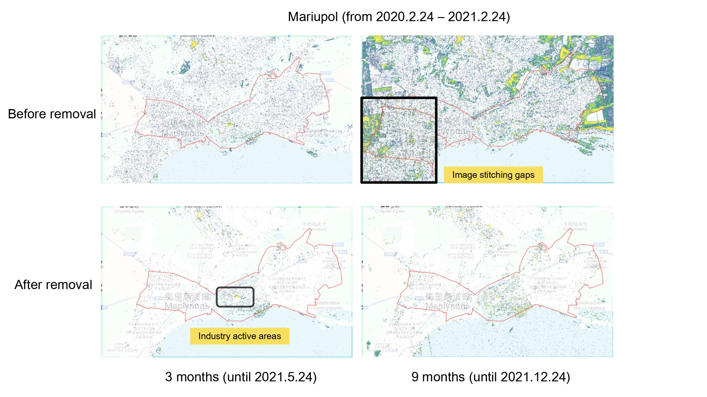
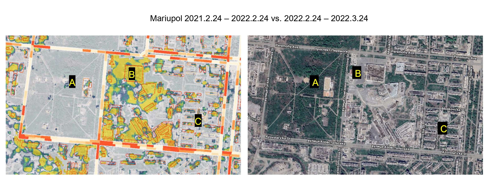
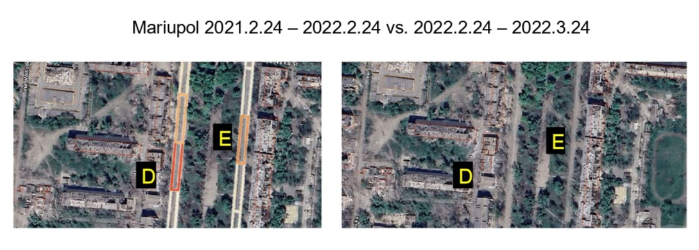

Assessing Urban War Damage in Kharkiv and Mariupol, Ukraine Using Sentinel-1 Imagery
Project Summary
Fill in the sections below to provide a brief summary of your project. Each section should have no more than 100 words. Do not edit any of the headings.
Problem Statement
What is the problem you’re trying to address using this application?
This application addresses the need for transparent, cost-effective tools to assess infrastructure damage in urban areas affected by the Russia–Ukraine war. It focuses on Kharkiv and Mariupol, the two most affected cities, and estimates building and road damage using a lightweight, unsupervised pixel-wise t-test on freely available Sentinel-1 imagery. Although the war is ongoing, our analysis focuses on the year before and after February 24, 2022, when the full-scale invasion began. Unlike deep learning approaches requiring expensive optical imagery, this method supports repeatable, scalable, and interpretable analysis. The results can assist post-war reconstruction planning, guide humanitarian aid, and inform public understanding of urban destruction patterns in these cities.
End User
Who are you building this application for? How does it address a need this community has?
- Government and planning departments: Initial analyze damage patterns and damage to specific facilities (e.g. housing, hospitals) to prioritise reconstruction and allocate resources effectively.
- Humanitarian organisations: Quickly identify severely damaged areas and assess damage to critical infrastructure and residential areas to provide guidance for emergency shelter, public health and logistics planning.
- Remote sensing and disaster assessment professionals: Use damage data to validate models, track changes, and compare methods or datasets in disaster impact studies.
- Public and media: Explore clear, visual maps of war damage, thereby raising public awareness, and can provide data to support news reporting.
Data
What data are you using?
Sentinel-1 Imagery
This application uses Sentinel-1 Imagery provided by Google Earth Engine. To simplify processing and prioritize sensitivity to structural damage, only VH-polarized imagery was used. The data spans February 24, 2020 to February 24, 2023, covering placebo, pre-war, and war phases. From February 2022, imagery was compared monthly to capture temporal changes in damage.Building Footprints
Building footprint data is sourced from the Overture Maps Foundation, which combines several open datasets, primarily from OpenStreetMap, Microsoft, and Google Open Buildings. Buildings smaller than 50 m² were excluded due to potential building false positives and the resolution of Sentinel-1.Road Networks
The road network data was retrieved from OpenStreetMap using the OSMnx package in Python, extracting roads classified as trunk, primary, secondary, and tertiary, and simplifying bidirectional edges.
Methodology
How are you using this data to address the problem?
We used Sentinel-1 SAR imagery to perform a pixel statistical test (t-test) for pre- and post-war changes, identifying potential damage on the map. Overlaying the building footprints and road network data with t-test results to locate and classify damage, and calculate the percentage of damaged buildings and roads, and different subtypes of damaged buildings at 95% confidence intervals. Through monthly monitoring of post-war damages for 12 months after 2022-2-24, the evolution of the war impact will be tracked, and user can select different times to view changes in damages. These features will support urban damage assessment and post-war reconstruction planning.
Interface
How does your application’s interface work to address the needs of your end user?
The application provides clear, visual maps of war damage, enabling the public and researchers in remote sensing and disaster assessment to track the evolution of destruction and the recovery process over time. Layer comparison tools help Ukrainian government and humanitarian organizations visually identify specific areas are affected, supporting resource planning and decision-making for wartime relief and post-disaster reconstruction. The application also calculates the proportion of damaged buildings and roads, and visualizes the distribution of damage across different building types, offering reference statistics for researchers. All users can export damaged building GeoJSON data to conduct urban assessments and make data-driven decisions.
The Application
How it Works
Data Input and Processing
We imported the vector data, including building footprints with building type information and 7.5-meter-wide rectangular road layers, and merged the data from two cities.
// ------------------------------------------------- Import Data ----------------------------------------------
// Building footprint
var buildings_ukr1 = ee.FeatureCollection("projects/ee-yiyaocui/assets/ukr1");
var buildings_ukr7 = ee.FeatureCollection("projects/ee-yiyaocui/assets/ukr7");
var buildings = buildings_ukr1.merge(buildings_ukr7);
// Roads
var roads_ukr1 = ee.FeatureCollection("projects/ee-yiyaocui/assets/osm_ukr1_buffer_50_75_8")
.filterBounds(aoi);
var roads_ukr7 = ee.FeatureCollection("projects/ee-yiyaocui/assets/osm_ukr7_buffer_50_75_14")
.filterBounds(aoi);
var roads = roads_ukr1.merge(roads_ukr7);Then, we set up our area of interest (AOI), time range, and map’s centroids. For time range:
- SHOCK_DATE: 2022-02-24, when Russia launched a full-scale military invasion of Ukraine.
- PRE_INTERVAL: 12-month pre-event period (baseline).
- POST_INTERVAL: 12-month post-event period (all assessment windows).
We defined a updateDateRanges() function to flexibly select an assessment window for the interactive tool.
// ------------------------------------------------- Set-up ----------------------------------------------
//AOI
var cityBoundaries = ee.FeatureCollection("projects/ee-yiyaocui/assets/unosat_aois")
.style({
color: 'red',
fillColor: '00000000',
width: 1
});
var aoi = cityBoundaries.geometry();
var ukr1 = ee.Geometry.Rectangle([37.46, 47.06, 37.72, 47.16]);
var ukr7 = ee.Geometry.Rectangle([36.09, 49.87, 36.46, 50.11]);
var aoi = ee.FeatureCollection([
ee.Feature(ukr1),
ee.Feature(ukr7)
]).merge(ee.FeatureCollection([])).geometry();
//Time
var SHOCK_DATE = "2022-02-24";
var PRE_INTERVAL = 12; // month before the event
var POST_INTERVAL = 12; // month after the event
// Calculate precise data filtering range, recalculate when POST_INTERVAL changes
function updateDateRanges() {
var startDate = ee.Date(SHOCK_DATE).advance(-PRE_INTERVAL, "month").format("YYYY-MM-dd");
var endDate = ee.Date(SHOCK_DATE).advance(POST_INTERVAL, "month").format("YYYY-MM-dd");
return {startDate: startDate, endDate: endDate};
}
// Initialize date range
var dateRanges = updateDateRanges();
var startDate = dateRanges.startDate;
var endDate = dateRanges.endDate;
// Centroid
Map.centerObject(cityBoundaries, 8);
// Centroid of mariupol
var mariupolCenter = ee.Geometry.Point([37.59269, 47.09966]);
Map.centerObject(mariupolCenter, 14);Based on the tutorial code from CASA0025 Week 9 (Ballinger, O. (2024)), we used the following equation to compute the t-value for each pixel, comparing radar backscatter values before and after the war:
\[ \Large t = {\frac{\overline{x_1}-\overline{x_2}} {\sqrt{\frac{s^2_1}{n_1} + \frac{s^2_2}{n_2}}}} \]
Where:
- \(\overline{x_1}\)：mean of the pre-war imagery // code variables: pre-mean
- \(\overline{x_2}\)：mean of the post-war imagery // code variables: post_mean
- \(s_1^2, s_2^2\)：variance of the pre- and post-war data // code variables: pre_sd, post_sd; \(s^2\) is implied as \(sd^2\)
- \(n_1, n_2\)：number of images before and after the war // code variables: pre_n, post_n
This approach helps quantify whether observed changes are statistically significant and is particularly useful when ground-truth data is limited. Finally, a t-value greater than 2.5 indicates a significant change at the 99% confidence level.
// -------------------------------------- TTest function ----------------------------------------------
// t-test function (building analysis)
function ttest(s1, shock, pre_interval, post_interval) {
// Convert event date to ee.Date object
var shock = ee.Date(shock);
// Filter pre-event images: from (shock - pre_interval months) to shock
var pre = s1.filterDate(
shock.advance(ee.Number(pre_interval).multiply(-1), "month"),
shock
);
// Filter post-event images: from shock to (shock + post_interval months)
var post = s1.filterDate(shock, shock.advance(post_interval, "month"));
// Calculate pre-event mean, standard deviation, and image count
var pre_mean = pre.mean();
var pre_sd = pre.reduce(ee.Reducer.stdDev());
var pre_n = ee.Number(pre.filterBounds(aoi).size());
// Calculate post-event mean, standard deviation, and image count
var post_mean = post.mean();
var post_sd = post.reduce(ee.Reducer.stdDev());
var post_n = ee.Number(post.filterBounds(aoi).size());
// Print pre and post event image counts for debugging
print('Pre-event images count: ', pre_n);
print('Post-event images count: ', post_n);
// Calculate pooled standard deviation
var pooled_sd = pre_sd
.multiply(pre_sd)
.multiply(pre_n.subtract(1))
.add(post_sd.multiply(post_sd).multiply(post_n.subtract(1)))
.divide(pre_n.add(post_n).subtract(2))
.sqrt();
// Calculate denominator part of t-test formula
var denom = pooled_sd.multiply(
ee.Number(1).divide(pre_n).add(ee.Number(1).divide(post_n)).sqrt()
);
// Calculate degrees of freedom (number of observations minus 2)
var df = pre_n.add(post_n).subtract(2);
print("Number of Images: ", df);
// Calculate t-value: absolute difference of means divided by denominator, minus 2
var change = post_mean
.abs()
.subtract(pre_mean.abs())
.divide(denom)
.abs()
.subtract(2.5);
// Return t-value for each pixel
return change;
}We filter Sentinel-1 radar images by selecting the VH polarization band and the most common orbit number, then separately process ASCENDING and DESCENDING orbits to reduce directional noise. Also, we use NDVI to reduce vegetation disturbance (NDVI > 0.2: vegetation)(Wang, X. and Li, P. (2020), USGS (2018)).
// ---------------------------------------------- Satellite Image ----------------------------------------------
// Select Sentinel 1 images collection for analysis
function filter_s1(path) {
var s1 = ee
.ImageCollection("COPERNICUS/S1_GRD")
.filter(ee.Filter.listContains("transmitterReceiverPolarisation", "VH"))
.filter(ee.Filter.eq("instrumentMode", "IW"))
.filter(ee.Filter.eq("orbitProperties_pass", path))
.filterBounds(aoi)
.filterDate(startDate, endDate)
.select("VH");
var orbit = s1
.aggregate_array("relativeOrbitNumber_start")
.reduce(ee.Reducer.mode());
s1 = s1.filter(ee.Filter.eq("relativeOrbitNumber_start", orbit));
// Return change in t-value
var change = ttest(s1, SHOCK_DATE, PRE_INTERVAL, POST_INTERVAL)
return change;
}
// Select sentinel image for calculation
var ascending_image = filter_s1("ASCENDING");
var descending_image = filter_s1("DESCENDING");
var asc_des = ee.ImageCollection([ascending_image, descending_image])
.median() // use median to reduce impacts of outliers
.clip(aoi);
// Add NDVI Mask
var s2 = ee.ImageCollection('COPERNICUS/S2_SR')
.filterDate(startDate, SHOCK_DATE)
.filterBounds(aoi)
.select(['B4','B8'])
.median();
var ndvi = s2.normalizedDifference(['B8','B4']).rename('NDVI');
var ndvi_mask = ndvi.gt(0.2);
// Generate Composite Image
var composite_image = asc_des.where(ndvi_mask, 0);Then we overlay the t-test output with building and road layers to estimate the number of damaged buildings and roads in each city. As roads are sensitive to neighboring pixels, we defined damaged roads with at least 50% significant pixels.
// ----------------------------------------------- Analysis ----------------------------------------------
// Select significant pixel where t-value is positive (95% confidence interval)
var threshold = composite_image.updateMask(composite_image.gt(0));
// Detect damaged buildings and roads
var damaged_building = threshold.reduceRegions({
collection: buildings,
reducer: ee.Reducer.mean(),
scale: 10
});
var damaged_roads = threshold.reduceRegions({
collection: roads,
reducer: ee.Reducer.mean(),
scale: 10
});
// -------------------------------------- Calculation ----------------------------------------------
// Calculate the number of damaged buildings/roads by cities
//Buildings
var mariupol_buildings = damaged_building.filterBounds(ukr1).filter(ee.Filter.gt("mean", 0));
var kharkiv_buildings = damaged_building.filterBounds(ukr7).filter(ee.Filter.gt("mean", 0));
var total_buildings = mariupol_buildings.merge(kharkiv_buildings);
//Roads
var mariupol_roads = damaged_roads.filterBounds(ukr1).filter(ee.Filter.gt("mean", 0.5));
var kharkiv_roads = damaged_roads.filterBounds(ukr7).filter(ee.Filter.gt("mean", 0.5));
var total_roads = mariupol_roads.merge(kharkiv_roads);
// -------------------------------------- Visualization ----------------------------------------------
// Define color palettes for damaged buildings and roads
var palette = ["FFFFFF", "3b528b", "21918c", "5ec962", "fde725"];
var building_palette = ["FFF3D6", "FFDD9E", "FFBE66", "FF9A3D", "FF7519", "FF5100", "FD3000"];
// -------------------------------------- Layers ----------------------------------------------
//ttest
Map.addLayer(
composite_image,
{ min: 0, max: 4, opacity: 0.8, palette: palette },
"Buildings Change",
false // Not displayed by default
);
// Building Footprint Outline
var empty_buildings = ee.Image().byte();
var buildings_outline = empty_buildings.paint({
featureCollection: damaged_building,
color: "mean",
width: 1.5
});
// Draw road outline - add white border
var empty_roads = ee.Image().byte();
// First create a wider white border
var roads_white_outline = empty_roads.paint({
featureCollection: damaged_roads,
color: 1, // White
width: 9 // Wider than normal width to form a border
});
// Then create normal width colored roads
var roads_outline = empty_roads.paint({
featureCollection: damaged_roads,
color: "mean",
width: 5
});
// Mapping for checking but displayed by default for user interface design
// Add building outline layer
Map.addLayer(
buildings_outline,
{ palette: building_palette, min: 0.6, max: 2 },
"Damaged Buildings",
true // Displayed by default
);
// First add white border layer
Map.addLayer(
roads_white_outline,
{ palette: ["ffffff"], min: 0, max: 1 },
"Roads White Outline",
false // Not displayed by default
);
// Then add colored road layer
Map.addLayer(
roads_outline,
{ palette: building_palette, min: 0.6, max: 2 },
"Damaged Roads",
false // Not displayed by default
);
// Add city boundary layer
Map.addLayer(cityBoundaries, {}, 'adminboundaries');Validations & Limitations
| Color Icon | Color Name | Damage Level |
|---|---|---|
| 🔵 | Blue | No damage |
| 🟢 | Green | Low damage |
| 🟡🟠 | Yellow / Orange | Medium damage |
| 🔴 | Red | High levels of damage |
Placebo Test
 
The placebo test showed cumulative natural disturbances, stronger and seasonal in Kharkiv, and mainly industrial in Mariupol, with visible improvement after vegetation removal.
T-Test Image Validation by Detection
In the t-test evaluations, our method effectively identified large-scale damage to buildings and roads, supported by the prior separation of built-up areas from open green spaces.
 
In Area A, structural damage was accurately detected without interference from surrounding vegetation; in Area B, major building footprint damage was captured with slight spatial overflow; and in Area C, gaps between adjacent row houses were clearly distinguished. On roads, the model correctly detected heavily damaged sections alongside buildings in Area D, but misclassified a functioning road in Area E as moderately damaged.
T-Test Image Validation with UNOSAT Data
In addition, we compared our outcome to UNOSAT data to validate the model’s performance to detect damaged buildings. (UNOSAT, cited in Dietrich et al., 2025)
Analysis
The following chunk is a python script.
# Label ground truth and predicted damage status
ukr1_all = ukr1_all.copy()
# Label ground truth: check if building is marked damaged by UNOSAT
ukr1_all['gt_damaged'] = ukr1_all.geometry.apply(
lambda geom: ukr1_unosat.intersects(geom).any()
)
# Label prediction: check if building geometry intersects GEE detected damage
ukr1_all['pred_damaged'] = ukr1_all.geometry.apply(
lambda geom: ukr1_gee.intersects(geom).any()
)
### Mariupol with 99% confidence interval
| Metric | Value |
|:--------------|:-------|
| TP (True Positive) | 3362 |
| FP (False Positive) | 5800 |
| FN (False Negative) | 1831 |
| TN (True Negative) | 8695 |
| Precision | 0.3670 |
| Recall | 0.6474 |
| Specificity | 0.5999 |
| Accuracy | 0.6124 |
| F1 Score | 0.4684 |
---
### Mariupol with 95% confidence interval
| Metric | Value |
|:--------------|:-------|
| TP (True Positive) | 3908 |
| FP (False Positive) | 7932 |
| FN (False Negative) | 1285 |
| TN (True Negative) | 6563 |
| Precision | 0.3301 |
| Recall | 0.7526 |
| Specificity | 0.4528 |
| Accuracy | 0.5318 |
| F1 Score | 0.4589 |
---
### Kharkiv with 99% confidence interval
| Metric | Value |
|:--------------|:-------|
| TP (True Positive) | 689 |
| FP (False Positive) | 57286 |
| FN (False Negative) | 182 |
| TN (True Negative) | 58532 |
| Precision | 0.0119 |
| Recall | 0.7910 |
| Specificity | 0.5054 |
| Accuracy | 0.5075 |
| F1 Score | 0.0234 |
---
### Kharkiv with 95% confidence interval
| Metric | Value |
|:--------------|:-------|
| TP (True Positive) | 751 |
| FP (False Positive) | 72650 |
| FN (False Negative) | 120 |
| TN (True Negative) | 43168 |
| Precision | 0.0102 |
| Recall | 0.8622 |
| Specificity | 0.3727 |
| Accuracy | 0.3764 |
| F1 Score | 0.0202 |Conclusively, using a 99% confidence interval improved predictive performance. In Mariupol, the F1 score reached 0.4684, demonstrating reasonable effectiveness, while Kharkiv’s F1 score remained low at 0.0234.
Performance limitations were likely linked to natural disturbances, pixel spill-over effects caused by the resolution constraints of 10-metre imagery, temporal mismatches with manual labels due to the cumulative nature of warfare destruction and unclear damage definitions, and missing road footprint and subtype data.
While the method remains valuable for preliminary screening by international organisations, future improvements should prioritize refined preprocessing, clearer damage definitions, multi-temporal validation, and the potential integration of supervised learning techniques to enhance overall accuracy.
User Interface
The following part is the code for UI design.
// ------------------------------------- USER INTERFACE -------------------------------------
// Create left control panel
var leftPanel = ui.Panel({
style: {
position: 'top-left',
minWidth: '290px',
width: '22%',
maxWidth: '500px',
maxHeight: '88%',
height: 'auto'
},
layout: ui.Panel.Layout.flow('vertical', true)
});
// Title panel
var titlePanel = ui.Panel([
ui.Label('Ukraine Buildings and Roads Damage Assessment', {
fontWeight: 'bold',
fontSize: '20px'
}),
ui.Label('Assessing Urban War Damage in Kharkiv and Mariupol, Ukraine Using Sentinel-1 Imagery')
]);
// Add separator line
var lineBreak = ui.Panel({
style: {
stretch: 'horizontal',
height: '1px',
backgroundColor: '000',
margin: '8px 0px 8px 0px'
}
});
// Set Mariupol and Kharkiv city center coordinates
var mariupolCenter = ee.Geometry.Point([37.59269, 47.09966]);
var kharkivCenter = ee.Geometry.Point([36.232845, 49.988358]);
// Create city selection dropdown
var citySelect = ui.Select({
items: ['Mariupol','Kharkiv'],
value: 'Mariupol',
onChange: function(value) {
if (value === 'Kharkiv') {
Map.centerObject(kharkivCenter, 13);
} else if (value === 'Mariupol') {
Map.centerObject(mariupolCenter, 14);
}
},
style: {stretch: 'horizontal', textAlign: 'center'}
});
var cityPanel = ui.Panel([
ui.Label('Select City', {
textAlign: 'center',
fontSize: '16px',
fontWeight: 'bold'
}),
citySelect
])
// create a time selection panel
var timePanel = ui.Panel({
layout: ui.Panel.Layout.flow('vertical'),
style: {padding: '5px 0'}
});
timePanel.add(ui.Label('Select Time Period', {
fontSize: '16px',
fontWeight: 'bold',
textAlign: 'center'
}));
// create a start date information (fixed value)
var formattedStartDate = ee.Date(SHOCK_DATE).format('YYYY-MM-dd').getInfo();
timePanel.add(ui.Label('Start Date:' + formattedStartDate +' (Fixed)', {
textAlign: 'left'
}));
// create a date picker to select a time interval
var endDateLabel = ui.Label('End Date:', {
textAlign: 'left'
});
timePanel.add(endDateLabel);
// set up the month interval options
var intervalOptions = [
{label: '1 months (2022-03-24)', value: 1},
{label: '2 months (2022-04-24)', value: 2},
{label: '3 months (2022-05-24)', value: 3},
{label: '4 months (2022-06-24)', value: 4},
{label: '5 months (2022-07-24)', value: 5},
{label: '6 months (2022-08-24)', value: 6},
{label: '7 months (2022-09-24)', value: 7},
{label: '8 months (2022-10-24)', value: 8},
{label: '9 months (2022-11-24)', value: 9},
{label: '10 months (2022-12-24)', value: 10},
{label: '11 months (2023-01-24)', value: 11},
{label: '12 months (2023-02-24)', value: 12}
];
// create a time interval selection drop-down box
// default set the POST_INTERVAL to 1, to compare with the first month
var POST_INTERVAL = 1;
var intervalSelect = ui.Select({
items: intervalOptions,
value: POST_INTERVAL,
onChange: function(value) {
POST_INTERVAL = Number(value);
reanalyzeWithNewInterval();
// update the left map
copyLayersToLeftMap();
// update the right map
setRightMapLayers();
},
style: {stretch: 'horizontal'}
});
timePanel.add(intervalSelect);
timePanel.add(ui.Label('Select different time periods to view the evolution of war impacts on cities', {
fontSize: '11px'
}));
// -------------------------------------
// Layer control panel
var layerPanel = ui.Panel({
widgets: [
ui.Label('Select Layers', {
fontSize: '16px',
fontWeight: 'bold'
})
],
layout: ui.Panel.Layout.flow('vertical', false), // Set to false to disable scrollbar
style: {padding: '0px', margin: '0px', maxHeight: 'none'} // Ensure no height limit
});
// Get layer by specific name
function getLayerByName(name) {
var layers = Map.layers().getJsArray();
for (var i = 0; i < layers.length; i++) {
if (layers[i].getName() === name) {
return layers[i];
}
}
return null;
}
// Create layer checkboxes
var buildingsCheckbox = ui.Checkbox({
label: 'Buildings',
value: true, // Selected by default
onChange: function(isChecked) {
// Use name to find layer instead of index
var layer = getLayerByName("Damaged Buildings");
if (layer) {
layer.setShown(isChecked);
}
}
});
var roadsCheckbox = ui.Checkbox({
label: 'Roads',
value: false, // Not selected by default
onChange: function(isChecked) {
// Control both road layers simultaneously
var whiteOutline = getLayerByName("Roads White Outline");
var roads = getLayerByName("Damaged Roads");
if (whiteOutline) {
whiteOutline.setShown(isChecked);
}
if (roads) {
roads.setShown(isChecked);
}
}
});
var ttestCheckbox = ui.Checkbox({
label: 'T-test Result',
value: false, // Not selected by default
onChange: function(isChecked) {
var layer = getLayerByName("T-test Result");
if (layer) {
layer.setShown(isChecked);
}
}
});
// Create a horizontal layout panel to contain checkboxes
var checkboxPanel = ui.Panel({
widgets: [buildingsCheckbox, roadsCheckbox, ttestCheckbox],
layout: ui.Panel.Layout.flow('horizontal'),
style: {stretch: 'horizontal', margin: '4px 0px'}
});
// Add checkbox horizontal panel to layer control panel
layerPanel.add(checkboxPanel);
// Create an empty row as separator
layerPanel.add(ui.Label('', {margin: '8px 0px'}));
// Create legend function
function createColorBarPanel() {
// Define color array
var colors = ["FFF3D6", "FFDD9E", "FFBE66", "FF9A3D", "FF7519", "FF5100", "FD3000"];
// Create color bar parameters
function makeColorBarParams(palette) {
return {
bbox: [0, 0, 1, 0.1],
dimensions: "100x10",
format: "png",
min: 0,
max: 1,
palette: palette,
};
}
// Create legend title
var colorBarTitle = ui.Label({
value: "Damage Probability",
style: { fontWeight: "bold", textAlign: "center", stretch: "horizontal"},
});
// Create color bar
var colorBar = ui.Thumbnail({
image: ee.Image.pixelLonLat().select(0),
params: makeColorBarParams(colors),
style: { stretch: "horizontal", margin: "0px 8px", maxHeight: "24px" },
});
// Create legend labels
var colorBarLabels = ui.Panel({
widgets: [
ui.Label('Low', { margin: "4px 8px" }),
ui.Label(" ", {
margin: "4px 8px",
textAlign: "center",
stretch: "horizontal",
}),
ui.Label('High', { margin: "4px 8px" }),
],
layout: ui.Panel.Layout.flow("horizontal"),
});
// Combine all elements
var colorBarPanel = ui.Panel({
widgets: [colorBarTitle, colorBar, colorBarLabels],
style: {stretch: 'horizontal', margin: "0px 0px 8px 0px"}
});
return colorBarPanel;
}
// Add color legend to layer panel
layerPanel.add(createColorBarPanel());
// -------------------------------------
// Create assessment panel
var assessPanel = ui.Panel({
layout: ui.Panel.Layout.flow('vertical'),
style: {padding: '5px 0', margin: '5px 0'}
});
// Add title
assessPanel.add(ui.Label('Calculate Damaged Buildings and Roads', {
fontSize: '16px',
fontWeight: 'bold'
}));
// Create results display area
var resultsPanel = ui.Panel({
layout: ui.Panel.Layout.flow('vertical'),
style: {
margin: '8px 0px',
padding: '8px',
border: '1px solid #cccccc',
fontSize: '13px'
}
});
resultsPanel.add(ui.Label('Select a city and click Calculate button to view damage assessment.'));
// Create button panel (horizontal layout)
var buttonPanel = ui.Panel({
layout: ui.Panel.Layout.flow('horizontal'),
style: {stretch: 'horizontal', margin: '5px 0'}
});
// Create calculate button
var calculateButton = ui.Button({
label: 'Calculate',
onClick: function() {
calculateDamage();
},
style: {
stretch: 'horizontal',
textAlign: 'center',
margin: '5px 2px 5px 0'
}
});
// Create reset button
var resetButton = ui.Button({
label: 'Reset',
onClick: function() {
updateResultsPanel();
},
style: {
stretch: 'horizontal',
textAlign: 'center',
margin: '5px 0 5px 2px'
}
});
// Add buttons to button panel
buttonPanel.add(calculateButton);
buttonPanel.add(resetButton);
// Add button panel and results panel
assessPanel.add(buttonPanel);
assessPanel.add(resultsPanel);
// Results displayed in assessment panel
function updateResultsPanel() {
try {
// Convert EE object to JavaScript string (for UI display)
var formattedEndDate = ee.Date(SHOCK_DATE).advance(POST_INTERVAL, "month").format('YYYY-MM-dd').getInfo();
// Clear results panel
resultsPanel.clear();
resultsPanel.add(ui.Label('Select a city and click Calculate button to view damage assessment.'));
} catch (e) {
print('Error updating results panel:', e);}
}
// Calculate damage
function calculateDamage() {
// Get currently selected city
var selectedCity = citySelect.getValue();
// Clear results panel and show calculating status
resultsPanel.clear();
resultsPanel.add(ui.Label('Calculating...', {
color: '#0034f5'
}));
// Force UI to render first, then execute calculation using ee.Number's evaluate method
ee.Number(1).evaluate(function() {
// Convert EE object to JavaScript string (for UI display)
var formattedEndDate;
try {
formattedEndDate = ee.Date(SHOCK_DATE).advance(POST_INTERVAL, "month").format('YYYY-MM-dd').getInfo();
} catch (e) {
formattedEndDate = "Error: Could not format date";
print("Error formatting end date:", e);
}
// Get corresponding AOI based on selected city
var cityAOI;
if (selectedCity === 'Mariupol') {
cityAOI = ukr1;
} else if (selectedCity === 'Kharkiv') {
cityAOI = ukr7;
}
try {
// Filter buildings and roads for current city
var city_buildings = damaged_building.filterBounds(cityAOI).filter(ee.Filter.gt("mean", 0));
var city_roads = damaged_roads.filterBounds(cityAOI).filter(ee.Filter.gt("mean", 0));
// Calculate totals and proportions
// Get total building count for this city (by querying original building data)
var total_city_buildings = buildings.filterBounds(cityAOI);
var total_city_roads = roads.filterBounds(cityAOI);
// get data on damaged buildings and road
var damaged_buildings_count = city_buildings.size().getInfo();
var total_buildings_count = total_city_buildings.size().getInfo();
var damaged_roads_count = city_roads.size().getInfo();
var total_roads_count = total_city_roads.size().getInfo();
// calculate the percentage of damaged buildings by subtype
var buildings_percentage = (damaged_buildings_count / total_buildings_count * 100).toFixed(2);
var roads_percentage = (damaged_roads_count / total_roads_count * 100).toFixed(2);
var countsDict = ee.Dictionary(city_buildings.aggregate_histogram('subtype'));
var subtypeTable = ee.FeatureCollection(
countsDict.keys().map(function(k){
k = ee.String(k);
var n = ee.Number(countsDict.get(k));
return ee.Feature(null, {
label : k.cat(' (').cat(n.format()).cat(')'),
count : n
});
}));
// draw a piechart for damaged building subtype
var damagePie = ui.Chart.feature.byFeature(subtypeTable, 'label', ['count']).setChartType('PieChart')
.setOptions({
pieHole: 0.4,
pieSliceText: 'lable',
legend: {position: 'bottom',
alignment: 'center',
textStyle: {fontSize: 14},
maxLines:3},
colors:['#0969a2','#ffc700','#ff4e40','#03436a','#ffe073','#ff1300','#245a7a','#ffd540',
'#d1b9c2','ff7d73','#64a8d1','bf3a30']
});
// clear and display results
resultsPanel.clear();
resultsPanel.add(ui.Label('City: ',{fontWeight: 'bold'}));
resultsPanel.add(ui.Label(selectedCity));
resultsPanel.add(ui.Label('Time Period:',{fontWeight: 'bold'}));
resultsPanel.add(ui.Label('2022-02-24 to ' + formattedEndDate));
resultsPanel.add(ui.Label('Damaged Buildings: ',{fontWeight: 'bold'}));
resultsPanel.add(ui.Label(damaged_buildings_count + ' out of ' + total_buildings_count + ' (' + buildings_percentage + '%)'));
resultsPanel.add(ui.Label('Damaged Roads: ',{fontWeight: 'bold'}));
resultsPanel.add(ui.Label(damaged_roads_count + ' out of ' + total_roads_count + ' (' + roads_percentage + '%)'));
resultsPanel.add(ui.Label('Building damage statistics (by building type):',{fontWeight: 'bold'}));
resultsPanel.add(damagePie);
} catch (e) {
// display error messages when errors occur
resultsPanel.clear();
resultsPanel.add(ui.Label('Error calculating results: ' + e.message, {
color: 'red',
fontWeight: 'bold'
}));
print('Error in damage calculation:', e);
}
});
}
// Reanalyze with new POST_INTERVAL
function reanalyzeWithNewInterval() {
// Clear console
//print('Reanalyzing: ' + POST_INTERVAL + ' months of war impact');
// Update date range
var newDateRanges = updateDateRanges();
startDate = newDateRanges.startDate;
endDate = newDateRanges.endDate;
//print('Analysis period: from ' + startDate + ' to ' + endDate);
// Clear existing layers on map
while (Map.layers().length() > 0) {
Map.layers().remove(Map.layers().get(0));
}
// Recalculate building and road changes
var ascending_image = filter_s1("ASCENDING");
var descending_image = filter_s1("DESCENDING");
var asc_des = ee.ImageCollection([ascending_image, descending_image])
.median()
.clip(aoi);
// Add NDVI Mask
var s2 = ee.ImageCollection('COPERNICUS/S2_SR')
.filterDate(startDate, SHOCK_DATE)
.filterBounds(aoi)
.select(['B4','B8'])
.median();
var ndvi = s2.normalizedDifference(['B8','B4']).rename('NDVI');
var ndvi_mask = ndvi.gt(0.2);
// Generate Composite Image
var composite_image = asc_des.where(ndvi_mask, 0);
// Create building change mask (95% confidence)
var threshold = composite_image.updateMask(composite_image.gt(0));
// Analyze building changes
damaged_building = threshold.reduceRegions({
collection: buildings,
reducer: ee.Reducer.mean(),
scale: 10
});
// Analyze road changes
damaged_roads = threshold.reduceRegions({
collection: roads,
reducer: ee.Reducer.mean(),
scale: 10
});
// Number of affected buildings and roads
var mariupol_buildings = damaged_building.filterBounds(ukr1).filter(ee.Filter.gt("mean", 0));
var kharkiv_buildings = damaged_building.filterBounds(ukr7).filter(ee.Filter.gt("mean", 0));
var total_buildings = mariupol_buildings.merge(kharkiv_buildings);
var mariupol_roads = damaged_roads.filterBounds(ukr1).filter(ee.Filter.gt("mean", 0.5));
var kharkiv_roads = damaged_roads.filterBounds(ukr7).filter(ee.Filter.gt("mean", 0.5));
var total_roads = mariupol_roads.merge(kharkiv_roads);
print("mariupol - damaged buildings:", mariupol_buildings.size());
print("kharkiv - damaged buildings:", kharkiv_buildings.size());
print("total - damaged buildings:", total_buildings.size());
print("mariupol - damaged roads:", mariupol_roads.size());
print("kharkiv - damaged roads:", kharkiv_roads.size());
print("total - damaged roads:", total_roads.size());
// Draw building outlines
var empty_buildings = ee.Image().byte();
var buildings_outline = empty_buildings.paint({
featureCollection: damaged_building,
color: "mean",
width: 1.5
});
// Draw road outlines - add white border
var empty_roads = ee.Image().byte();
var roads_white_outline = empty_roads.paint({
featureCollection: damaged_roads,
color: 1,
width: 9
});
var roads_outline = empty_roads.paint({
featureCollection: damaged_roads,
color: "mean",
width: 5
});
// Add layers
Map.addLayer(
composite_image,
{ min: 0, max: 4, opacity: 0.8, palette: palette },
"T-test Result",
false
);
Map.addLayer(
buildings_outline,
{ palette: building_palette, min: 0.6, max: 2 },
"Damaged Buildings",
true
);
Map.addLayer(
roads_white_outline,
{ palette: ["ffffff"], min: 0, max: 1 },
"Roads White Outline",
false
);
Map.addLayer(
roads_outline,
{ palette: building_palette, min: 0.6, max: 2 },
"Damaged Roads",
false
);
// Add city boundary layer
Map.addLayer(cityBoundaries, {}, 'adminboundaries');
// Restore layer visibility state
updateLayerVisibility();
// Reset results panel
updateResultsPanel();
}
// Update layer visibility state
function updateLayerVisibility() {
// Set layer visibility based on checkbox state
var buildingsLayer = getLayerByName("Damaged Buildings");
if (buildingsLayer) {
buildingsLayer.setShown(buildingsCheckbox.getValue());
}
var whiteOutlineLayer = getLayerByName("Roads White Outline");
var roadsLayer = getLayerByName("Damaged Roads");
if (whiteOutlineLayer && roadsLayer) {
whiteOutlineLayer.setShown(roadsCheckbox.getValue());
roadsLayer.setShown(roadsCheckbox.getValue());
}
var ttestLayer = getLayerByName("T-test Result");
if (ttestLayer) {
ttestLayer.setShown(ttestCheckbox.getValue());
}
}
// -------------------------------------
// Create download panel
var downloadPanel = ui.Panel({
layout: ui.Panel.Layout.flow('vertical'),
style: {stretch: 'horizontal', margin: '5px 0'}
});
// Add download title
downloadPanel.add(ui.Label('Download Damage Buildings Data', {
fontSize: '16px',
fontWeight: 'bold'
}));
// Label for displaying download link
var downloadUrlLabel = ui.Label(' ',{
fontSize: '13px'
});
// Create download button
var downloadButton = ui.Button({
label: 'Get Download Link',
onClick: function() {
// Get currently selected city
var selectedCity = citySelect.getValue();
// Get corresponding AOI based on selected city
var cityAOI;
if (selectedCity === 'Mariupol') {
cityAOI = ukr1;
} else if (selectedCity === 'Kharkiv') {
cityAOI = ukr7;
}
// Filter damaged buildings for current city
var city_buildings = damaged_building.filterBounds(cityAOI).filter(ee.Filter.gt("mean", 0));
// Generate current date-time string as part of filename
var filename = selectedCity + '_damaged_buildings_' + ee.Date(SHOCK_DATE).advance(POST_INTERVAL, "month").format('YYYY-MM-dd').getInfo();
// Get download link
var url = city_buildings.getDownloadURL({
format: 'GeoJSON',
filename: filename
});
// Update download link label
downloadUrlLabel.setUrl(url);
downloadUrlLabel.setValue('Download Link');
downloadUrlLabel.style().set({
fontSize: '13px',
color: 'blue',
textDecoration: 'underline'
});
},
style: {
stretch: 'horizontal',
textAlign: 'center',
margin: '5px 0'
}
});
// Add download button to download panel
downloadPanel.add(downloadButton);
downloadPanel.add(downloadUrlLabel);
// -------------------------------------
// Credit panel
var creditsNotes = ui.Panel([
ui.Label('Credits:', {fontSize: '12px', margin: '8px 8px 1px 8px', fontWeight: 'bold'}),
ui.Panel([
ui.Label('• Data source: ', {fontSize: '12px', margin: '0px 8px 8px 8px'}),
ui.Label('Sentinel-1', {fontSize: '12px', margin: '0px 8px 8px 0px'}, 'https://sentiwiki.copernicus.eu/web/s1-mission')
], ui.Panel.Layout.flow('horizontal'), {margin: '0px 0px 0px 0px', padding: '0px 0px 0px 0px'}),
ui.Panel([
ui.Label('• Building Footprints: ', {fontSize: '12px', margin: '0px 8px 8px 8px'}),
ui.Label('Overture Maps Foundation', {fontSize: '12px', margin: '0px 8px 8px 0px'}, 'https://overturemaps.org/')
], ui.Panel.Layout.flow('horizontal'), {margin: '0px 0px 0px 0px', padding: '0px 0px 0px 0px'}),
ui.Panel([
ui.Label('• Road Network: ', {fontSize: '12px', margin: '0px 8px 8px 8px'}),
ui.Label('OSM', {fontSize: '12px', margin: '0px 8px 8px 0px'}, 'https://www.openstreetmap.org/')
], ui.Panel.Layout.flow('horizontal'), {margin: '0px 0px 0px 0px', padding: '0px 0px 0px 0px'})
]);
// Add all panels to left control panel
leftPanel.add(titlePanel);
leftPanel.add(lineBreak);
leftPanel.add(cityPanel);
leftPanel.add(timePanel);
leftPanel.add(layerPanel);
leftPanel.add(assessPanel);
leftPanel.add(downloadPanel);
leftPanel.add(creditsNotes);
// Hide zoom button in top-left corner of map
Map.setControlVisibility({zoomControl: false});
// -------------------------------------
// Comparison slider functionality
// Create two map instances
var leftMap = ui.Map(); // Left map, showing analysis results
var rightMap = ui.Map(); // Right map, showing satellite imagery
// Add left control panel to left map
leftMap.add(leftPanel);
// Set left map layers - copy all layers from original Map to leftMap
function copyLayersToLeftMap() {
// First clear existing layers on leftMap
while (leftMap.layers().length() > 0) {
leftMap.layers().remove(leftMap.layers().get(0));
}
// Add building change layer
leftMap.addLayer(
composite_image,
{ min: 0, max: 4, opacity: 0.8, palette: palette },
"T-test Result",
false // Not displayed by default
);
// Add building outline layer
leftMap.addLayer(
buildings_outline,
{ palette: building_palette, min: 0.6, max: 2 },
"Damaged Buildings",
true // Displayed by default
);
// First add white border layer
leftMap.addLayer(
roads_white_outline,
{ palette: ["ffffff"], min: 0, max: 1 },
"Roads White Outline",
false // Not displayed by default
);
// Then add colored road layer
leftMap.addLayer(
roads_outline,
{ palette: building_palette, min: 0.6, max: 2 },
"Damaged Roads",
false // Not displayed by default
);
// Add city boundary layer
leftMap.addLayer(cityBoundaries, {}, 'adminboundaries');
// Restore layer visibility state
updateLeftMapLayerVisibility();
}
// Update left map layer visibility
function updateLeftMapLayerVisibility() {
// Set layer visibility based on checkbox state
var buildingsLayer = getLeftMapLayerByName("Damaged Buildings");
if (buildingsLayer) {
buildingsLayer.setShown(buildingsCheckbox.getValue());
}
var whiteOutlineLayer = getLeftMapLayerByName("Roads White Outline");
var roadsLayer = getLeftMapLayerByName("Damaged Roads");
if (whiteOutlineLayer && roadsLayer) {
whiteOutlineLayer.setShown(roadsCheckbox.getValue());
roadsLayer.setShown(roadsCheckbox.getValue());
}
var ttestLayer = getLeftMapLayerByName("T-test Result");
if (ttestLayer) {
ttestLayer.setShown(ttestCheckbox.getValue());
}
}
// Get left map specific layer name
function getLeftMapLayerByName(name) {
var layers = leftMap.layers().getJsArray();
for (var i = 0; i < layers.length; i++) {
if (layers[i].getName() === name) {
return layers[i];
}
}
return null;
}
// Set right map layers - show satellite imagery
function setRightMapLayers() {
// First clear existing layers on rightMap
while (rightMap.layers().length() > 0) {
rightMap.layers().remove(rightMap.layers().get(0));
}
// Set satellite base map
rightMap.setOptions('HYBRID');
// Add building footprint (white outline)
var emptyBuildings = ee.Image().byte();
var buildingsOutlineWhite = emptyBuildings.paint({
featureCollection: damaged_building,
color: 1,
width: 1.5
});
rightMap.addLayer(
buildingsOutlineWhite,
{palette: ['white'], min: 0, max: 1, opacity: 0.7},
'Buildings Footprint',
true
);
}
// Initialize left and right maps
copyLayersToLeftMap();
setRightMapLayers();
// Set initial center position
leftMap.centerObject(mariupolCenter, 14);
rightMap.centerObject(mariupolCenter, 14);
// Create map linker to synchronize two maps
var linker = ui.Map.Linker([leftMap, rightMap]);
// Modify city selection dropdown onChange event, update both maps
citySelect.onChange(function(value) {
// Get current city center
var cityCenter;
var zoomLevel;
if (value === 'Kharkiv') {
cityCenter = kharkivCenter;
zoomLevel = 13;
} else { // Mariupol
cityCenter = mariupolCenter;
zoomLevel = 14;
}
// Update center position of both maps
leftMap.centerObject(cityCenter, zoomLevel);
rightMap.centerObject(cityCenter, zoomLevel);
// Update right map
setRightMapLayers();
});
// Modify layer checkbox onChange event to update left map
buildingsCheckbox.onChange(function(isChecked) {
var layer = getLeftMapLayerByName("Damaged Buildings");
if (layer) {
layer.setShown(isChecked);
}
});
roadsCheckbox.onChange(function(isChecked) {
var whiteOutline = getLeftMapLayerByName("Roads White Outline");
var roads = getLeftMapLayerByName("Damaged Roads");
if (whiteOutline) {
whiteOutline.setShown(isChecked);
}
if (roads) {
roads.setShown(isChecked);
}
});
ttestCheckbox.onChange(function(isChecked) {
var layer = getLeftMapLayerByName("T-test Result");
if (layer) {
layer.setShown(isChecked);
}
});
// Create split panel
var splitPanel = ui.SplitPanel({
firstPanel: leftMap,
secondPanel: rightMap,
orientation: 'horizontal',
wipe: true,
style: {stretch: 'both'}
});
// Add split panel to UI root widget
ui.root.widgets().reset([splitPanel]);
// ensure that each initialization starts from 2022-3-24
reanalyzeWithNewInterval();Reference
Ballinger, O. (2024) 9 Blast Damage Assessment (WWW) London: CASA (https://github.com/oballinger/CASA0025/; 12 Mar 2024). Dietrich, O., Peters, T., Sainte Fare Garnot, V. and others (2025) An open-source tool for mapping war destruction at scale in Ukraine using Sentinel-1 time series, Communications Earth & Environment, 6, 215. Available at: https://doi.org/10.1038/s43247-025-02183-7 [Accessed 27 April 2025]. USGS, 2018. NDVI: The Foundation of Remote Sensing Phenology. [online] Available at: https://www.usgs.gov/special-topics/remote-sensing-phenology/science/ndvi-foundation-remote-sensing-phenology [Accessed 27 April 2025]. Wang, X. and Li, P. (2020) Extraction of urban building damage using spectral, height and corner information from VHR satellite images and airborne LiDAR data, ISPRS Journal of Photogrammetry and Remote Sensing, 159.